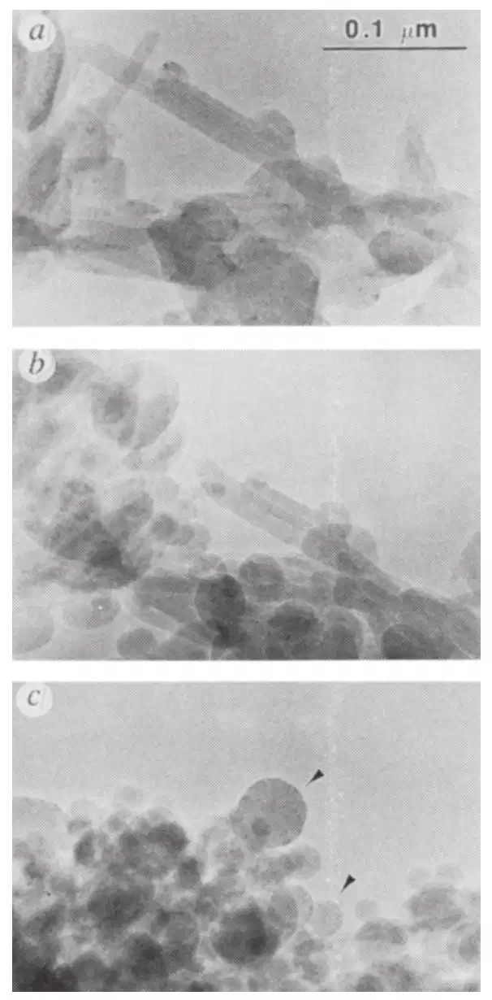
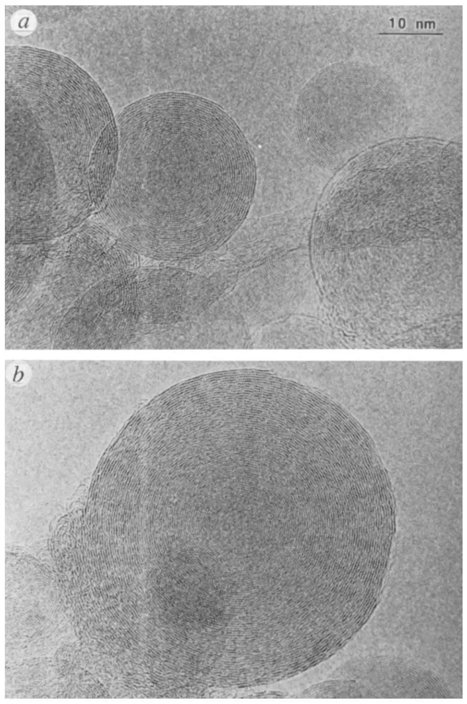
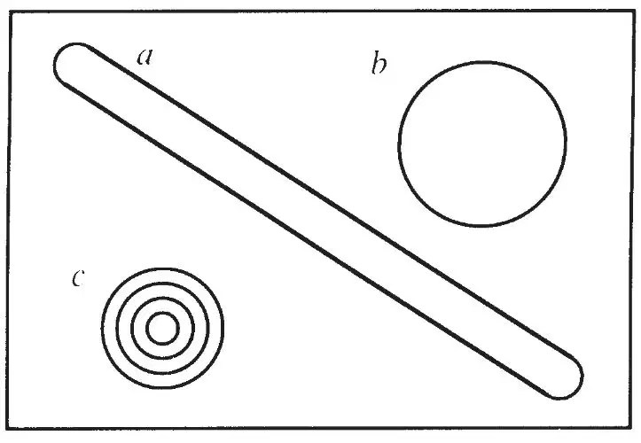
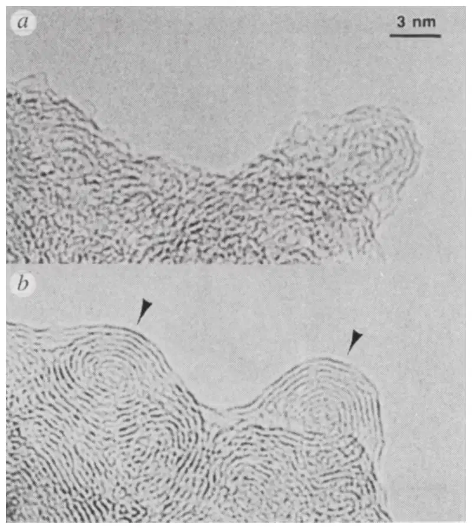

中文
中文D. Ugarte
Editor’s Note
After the discovery of cage-like carbon molecules called fullerenes and tubular structures called carbon nanotubes, it was suspected that sheets of graphite-like carbon might adopt a range of nanoscale structures in a kind of molecular origami. Here Daniel Ugarte at EPFL in Lausanne, Switzerland, reports another such variant: onion-like structures comprised of nested spherical shells of carbon. Some suggested that these were like giant fullerenes, although it transpired that the shells contain many crystal defects and breaks. Carbon “onions” with hollow centres have since been used to study encapsulated materials, and intense pressures at their centres may transform graphite-like carbon into diamond. 中文
The discovery1 of buckminsterfullerene (C60) and its production in macroscopic quantities2 has stimulated a great deal of research. More recently, attention has turned towards other curved graphitic networks, such as the giant fullerenes (Cn, n>100)3,4 and carbon nanotubes5-8. A general mechanism has been proposed9 in which the graphitic sheets bend in an attempt to eliminate the highly energetic dangling bonds present at the edge of the growing structure. Here, I report the response of carbon soot particles and tubular graphitic structures to intense electron-beam irradiation in a high-resolution electron microscope; such conditions resemble a high-temperature regime, permitting a degree of structural fluidity. With increased irradiation, there is a gradual reorganization of the initial material into quasi-spherical particles composed of concentric graphitic shells. This lends weight to the nucleation scheme proposed9 for fullerenes, and moreover, suggests that planar graphite may not be the most stable allotrope of carbon in systems of limited size. 中文
THE remarkable stability of the C60 molecule has been attributed to its highly symmetrical structure where the carbon atoms are arranged at the vertices of a truncated icosahedron1. The C60 molecule may be viewed as a hexagonal graphitic sheet which, by incorporating pentagons, has eliminated all dangling bonds, curling to form a hollow ball (7.1 Å in diameter). For all fullerenes, the strain due to the bending of the sp2 orbitals tends to concentrate at the vertices of the pentagons. The outstanding stability of the C60 molecule is due both to the fact that this is the smallest carbon cage where there are no adjacent pentagons, and to its spherical form which allows the strain to be symmetrically distributed over all atoms10. 中文
In addition to C60, cylindrical carbon structures have been observed5 in which the graphitic sheet has a helical arrangement. The natural question arises: how is it possible to generate such symmetrical, low-entropy forms from the random condensation of carbon vapour? Perhaps it is worthwhile to contemplate the ease with which these carbon hexagonal networks grow as curved or closed sheets rather than the traditionally planar ones. Chemists are conditioned to think of graphitic sheet structures as flat, where carbon atoms are bound in infinite hexagonal sheets, like chicken wire. In carbon vapour, pieces of graphite sheet would have many dangling bonds; they would have little reason to remain flat, and the physical tendency to reach the lowest energy level available would induce the sheets to eliminate their dangling bonds by curling up12. By heating and properly annealing pure carbon in the absence of other chemically active elements, and under conditions that favour sp2 carbon network formation, it should be possible to synthesize curled nets and closed cages. In fact, this is the situation in arc discharges, which is the technique used at present to produce macroscopic quantities of fullerenes2, metallofullerenes13 and graphitic tubules14. 中文
Under the conditions of observation in an electron microscope, strong irradiation in some respects resembles a high-temperature regime, allowing structural fluidity; for example, amorphous carbon films usually develop slight graphitization under the electron beam. In particular, irradiation usually heats the sample by energy absorption and ruptures bonds through electron excitations. Furthermore, high-energy particles can transfer momentum to the nuclei, displacing atoms to interstitial lattice sites (“knock on”). Such conditions may be realized by electron bombardment in a high-resolution electron microscope (HREM), and consequently the evolution of a sample may be observed, even up to atomic details under favourable conditions. We must note, however, that electron-beam heating may not lead to the same result as thermal heating, because of the contribution of the excitation processes. 中文
We have irradiated carbon soot in a 300-kV HREM microscope (Philips EM430 ST), using an electron dose up to 10–20 times higher than under normal operating conditions (the usual dose is 10–20 A cm–2). Figure 1 shows a sequence of images of a group of irradiated graphitic particles, taken at 10-minute intervals. The original soot, collected in an arc-discharge apparatus, contains mostly nanometric needles formed by coaxial graphitic tubes, with some polyhedral graphitic particles formed by the junction of small flakes of planar graphite (Fig. 1a). All the particles are covered with a thin amorphous carbon layer. In the intermediate image of the sequence (Fig. 1b), particles now show more marked curvature and, in particular, the tubular structures are collapsing. At this stage, the amorphous carbon layer has graphitized epitaxially onto the particles. Finally (Fig. 1c), the electron annealing leads to a sample composed almost entirely of spherical particles. Detailed examination of the particles shows that they consist of an assembly of concentric spherical graphitic cages (see Fig. 2), the distance between layers agreeing with that for bulk graphite (d002 = 3.34 Å). The apparent disorder in the spherical shells arises as a consequence of the low electron dose necessary for taking the micrographs; under such conditions, the heating effect of the electron beam is insufficient to permit structural reorganization back to the closed-shell form. Imaging on a much shorter timescale, however, permits the observation of more complete structures. The existence of these structures has already been proposed15-17. 中文

Fig. 1. Sequence of transmission electron micrographs of carbon soot subjected to strong electron beam irradiation. a, Original soot containing tubular or polyhedral graphitic particles; b, after 10 minutes of strong irradiation, there is a noticeable tendency for the particles forming the soot to become more spherical, especially the graphitic needles; c, after 20 minutes, the soot is nearly exclusively composed of quasi-spherical graphitic particles. Further irradiation does not produce significant observable changes in structure. 中文
The final spherical structures do not correspond to the deformation of a tube into a sphere with the same number of atoms (see scheme for single-shell particles in Fig. 3a, b), but rather to the formation of a multiple-shell sphere with a very small central cage (Fig. 3c). The reduced dimension of the final inner shell (0.6–1 nm) allows an increase in the number of shells. Following Euler’s theorem, any closed hexagonal network contains exactly 12 pentagonal rings; this is the case in the tube (Fig. 3a, the pentagons being situated at the hemispherical domes at the extremities of the cylinder) or in the spherical cage (Fig. 3b). The onion-like particle of Fig. 3c is formed by four closed shells; in consequence, it contains four times as many pentagons. Our results present clear experimental evidence of the spontaneous tendency of graphite to include pentagons in its hexagonal network and form curved structures. Hence, they support the dangling bond minimization scheme, proposed to explain the growth of fullerenes from carbon vapour9. 中文

Fig. 2. Detailed structure of the graphitic particles marked with an arrow in Fig. 1c. Dark contrast rings correspond roughly to atomic positions, and the distance between rings corresponds to the (002) lattice parameter of bulk graphite. Note the remarkable sphericity of the particles. 中文

Fig. 3. Schematic representation of three-dimensional particles formed by an equal graphitic surface: a, cylindrical structure closed by hemispherical domes (diameter Ø≈1 nm and 13.7 nm long); b, spherical cage (Ø≈3.74 nm); c, onion-like structure formed by 4 shells (Ø≈2.72 nm), the central one being a C60 molecule. 中文
Curved graphitic sheets can also be formed by irradiation of amorphous carbon particles (Fig. 4). The graphitic structures generated are naturally curled, and two nucleation centres are easily recognizable (marked with arrows in Fig. 4b), from which spherical particles will be formed. Further irradiation annealing leads to the separation of the two graphitic spheres. 中文

Fig. 4. Transmission electron micrographs of amorphous carbon subjected to electron irradiation. a, Original particle; b, after 10 minutes of strong irradiation, graphitization (marked with arrows) is present, and the sheets show a clear tendency to form closed cages. Further irradiation would lead to the separation of two graphitic spheres. 中文
The formation mechanism for these multiple-shell spheres is based on irradiation-stimulated graphitization, and is rather different from the accretion mechanism originally considered in laser vaporization and arc-discharge experiments, which would produce spiral multiple-shell particles9. 中文
The sequence shown in Fig. 1 clearly reveals that if enough energy is provided, spherical structures are favoured over tubular ones. This observation agrees with the predictions made for giant fullerenes18,19 (monolayers), but van der Waals interaction between the concentric layers should be included in order to compare calculations with the present experiments. 中文
The “spherical graphite” that we have observed may attain a considerable size (47 nm in diameter and ~70 shells for the particle shown in Fig. 2b). In a few cases, we have even observed spheres several micrometres in diameter, although in this range of sizes a prolonged irradiation period is required before the particles become spherical. We should not rule out the possibility that even larger (possibly macroscopic) graphitic spheres could be generated by adequate annealing of carbon; the maximum size attainable will give us information about the distortion present in the closed graphite sheets. The traditional idea that planar graphite is the most stable form of pure carbon would then have to be seriously reviewed: a flat graphite flake cannot be perfect, and includes many dangling bonds which are usually eliminated by attaching impurities (for example, hydrogen). The “spherical graphite” presented here is a pure carbon material, which has no dangling bonds, and moreover, having a spherical shape, allows a uniform distribution of the strain because of the out-of-plane geometry. Those of us accustomed to traditional planar graphite, initially surprised by the fascinating fullerenes, are now confronted with supplementary evidence that spherical carbon networks can be favoured under high temperature or strong irradiation regimes. 中文
This notion also raises a point concerning the solid allotropes of carbon. When Krätschmer et al.2 synthesized large amounts of the C60 molecule for the first time, they prepared a new, third form, of solid carbon (called fullerite), which is a three-dimensional packing of C60 spheres and is distinct from the two traditional crystalline carbon forms, graphite and diamond. Considering the observed tendency of graphite to form multiple-shell spheres (“onions”), of which single-shell fullerenes are only the first member, we speculate that fullerite is the first member of a family of new solid forms of carbon that could be formed by the packing of these onion-like graphitic spheres, interacting through van der Waals forces. Further experimental work will be needed to produce and isolate multishelled graphitic spheres, but a huge family of carbon materials awaits the skill of experimentalists. 中文
(359, 707-709; 1992)
Daniel Ugarte
Institut de Physique Expérimentale, Ecole Polytechnique Fėdérale de Lausanne, 1015 Lausanne, Switzerland
Received 7 September; accepted 2 October 1992.
References:
1. Kroto, H. W., Heath, J. R., O’Brien, S. C., Curl, R. F. & Smalley, R. E. Nature 318, 162-163 (1985).
2. Krätschmer, W., Lamb, L. D., Fostiropoulos, K. & Huffman, D. Nature 347, 354-358 (1990).
3. Kroto, H. W. & McKay, K. Nature 331, 328-331 (1988).
4. Lamb, L. D. et al. Science 255, 1413-1416 (1992).
5. Iijima, S. Nature 354, 56-58 (1991).
6. Mintimire, J. W., Dunlap, B. I. & White, C. T. Phys. Rev. Lett. 68, 631-634 (1992).
7. Hamada, N., Sawada, S. & Oshiyama, A. Phys. Rev. Lett. 68, 1579-1581 (1992).
8. Tanaka, K., Okahara, K., Okada, M. & Yamade, T. Chem. Phys. Lett. 191, 469-472 (1992).
9. Zhang, Q. L. et al. J. Phys. Chem. 90, 525-528 (1986).
10. Kroto, H. W. Nature 329, 529-531 (1987).
11. Bundy, F. P. Physica A156, 169-178 (1989).
12. Robertson, D. H., Brenner, D. W. & White, C. T. J. Phys. Chem. 96, 6133-6135 (1992).
13. Chai, Y. et al. J. Phys. Chem. 95, 7564-7568 (1991).
14. Ebbesen, T. W. & Ajayan, P. M. Nature 358, 220-222 (1992).
15. Curl, R. F. & Smalley, R. E. Scient. Am. 265, 32-41 (October, 1991).
16. Iijima, S. J. Cryst. Growth 50, 657-683 (1980).
17. Iijima, S. J. Phys. Chem. 91, 3466-3467 (1987).
18. Adams, G. B., Sankey, O. F., Page, J. B., O’Keeffe, M. & Drabold, D. A. Science 256, 1792-1795 (1992).
19. Scuseria, G. E. in Buckminsterfullerene (eds Billups, W. E. & Ciufolini, M. A.) (VCH, New York, in the press).
Acknowledgements. We thank H. W. Kroto and W. de Heer for discussions and comments, and D. Reinhard and B. D. Hall for critical reading of the manuscript.